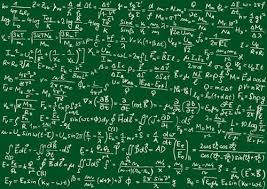

Математика
Math
Решение квадратных уравнений по формуле
ax
2
+bx+c=0
Выражение D=b
2
-4ac называют дискриминантом квадратного уравнения
Корни квадратного уравнения:
Если D>o X
1,2
=
-b ±√D;
2a
Если D < o X=
-b
2a
Если D < o ,
Нет корней
